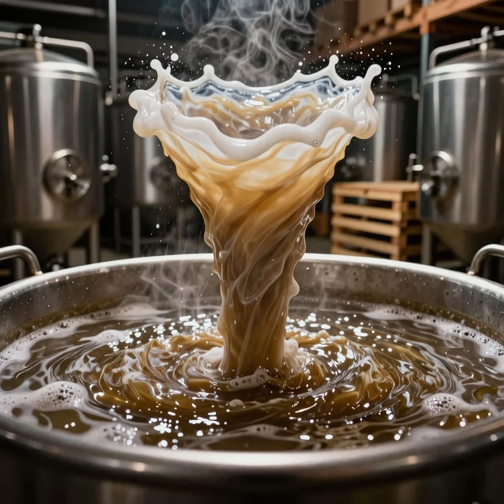

ДАЙДЖЕСТ / BODREEVSHOW
Вирпул

Вирпул в домашнем пивоварении: зачем нужен и как организовать
Вирпул (от англ. whirlpool — «водоворот») — этап в процессе пивоварения, во время которого сусло интенсивно перемешивают для формирования «бруха» (hot break) и осаждения взвесей: хмелевых частиц, белков и других твёрдых остатков. В результате сусло становится чище, а пиво — прозрачнее и стабильнее по вкусу.
Зачем нужен вирпул
Ключевые задачи этапа:
Осаждение взвесей. При круговом перемешивании частицы собираются в центре дна котла в виде конуса — так называемого «брух‑конуса». Это упрощает их отделение от сусла.
Улучшение прозрачности. Меньше взвесей — меньше помутнения в готовом пиве. Особенно важно для светлых стилей: IPA, Pilsner, Blonde Ale.
Экстракция ароматов. Короткий контакт горячего сусла с хмелем при вирпуле может усилить ароматический профиль (если хмель добавлен на этом этапе).
Подготовка к охлаждению. Сусло равномерно остывает, что снижает риск окисления и заражения.
Как работает вирпул: физика процесса
После кипячёния сусло энергично перемешивают по кругу — в котле возникает водоворот.
По инерции движение продолжается 10–20 минут.
Тяжёлые частицы (белки, хмелевые гранулы) под действием центробежной силы и гравитации смещаются к центру и оседают на дно.
Чистое сусло аккуратно сливают с осадка — обычно через кран в нижней части котла или с помощью насоса.
Когда делать вирпул
Стандартно — сразу после окончания кипячёния , перед охлаждением сусла. Типичная последовательность:
Кипячёние (60–90 мин) + внесение хмеля.
Вирпул (10–20 мин).
Охлаждение до температуры внесения дрожжей.
Некоторые пивовары добавляют ароматный хмель на вирпул (5–15 мин) — это даёт мягкий, но яркий аромат без лишней горечи.
Оборудование для вирпула дома
Вариант 1. Ручной (для котлов без мешалки)
Используйте длинную стерильную ложку или лопатку из нержавейки/пластика.
Энергично размешивайте сусло 1–2 минуты до устойчивого водоворота.
Накройте котёл крышкой и дайте отстояться 15–20 мин.
Аккуратно слейте сусло, не задевая осадок.
Вариант 2. С погружной мешалкой
Установите мешалку с пропеллером.
Включите на средние обороты на 2–3 минуты.
Отключите и дайте отстояться.
Вариант 3. Котёл с краном и встроенным вирпулом
Многие современные пивоваренные системы (например, Grainfather, Brewzilla) имеют патрубок сбоку — подача сусла через него создаёт водоворот автоматически.
Просто перекачайте сусло насосом по кругу 2–3 минуты, затем дайте отстояться.
Вариант 4. Внешний насос
Подключите циркуляционный насос к котлу.
Запустите сусло по контуру — образуется устойчивый водоворот.
Через 2–3 минуты выключите насос и оставьте на 15–20 мин.
Пошаговая инструкция для домашнего вирпула
Завершите кипячёние. Выключите нагрев.
Если используете ручной метод — размешивайте 1–2 мин до чёткого водоворота. При механическом способе — включите мешалку/насос на 2–3 мин.
Накройте котёл крышкой (чтобы снизить потери тепла и защитить от загрязнений).
Оставьте на 15–20 мин для осаждения частиц.
Проверьте конус осадка через смотровое окошко или подсветив дно фонариком.
Аккуратно откройте кран/начните перекачку, направляя поток выше уровня осадка. Первые порции с взвесью верните в котёл.
Как только сусло стало прозрачным, направьте поток на охлаждение.
Типичные ошибки
Слишком короткое отстаивание (<10 мин) — осадок не успевает сформироваться, часть взвесей попадает в ферментер.
Слишком долгое отстаивание (>30 мин) — сусло остывает ниже 75 °C, белки могут повторно диспергироваться.
Бурное сливание — взмучивание осадка, помутнение пива.
Отсутствие крышки — риск заражения и окисления.
Недостаточная скорость водоворота — слабый конус, плохое осаждение.
Влияние на стиль пива
IPA, APA — обязателен: улучшает прозрачность и подчёркивает хмелевой аромат.
Pilsner, Lager — критически важен: даёт кристальную прозрачность.
Stout, Porter — менее критичен (помутнение маскируется цветом), но улучшает стабильность.
Hazy IPA / NEIPA — часто пропускают или сокращают до 5–10 мин: частичный осадок даёт характерную «туманность».
Практические советы
Оптимальная температура вирпула: 80–90 ∘C. Ниже — хуже осаждение белков, выше — риск испарения ароматических веществ.
Для аромахмеля на вирпул берите сорта с цитрусовыми/тропическими нотами (Citra, Mosaic, Simcoe) — они дают яркий эффект.
Если нет крана внизу, сливайте через сито или марлю, чтобы задержать осадок.
Фиксируйте время вирпула и прозрачность сусла в рецепте — это поможет повторить успех.
Вывод
Вирпул — простой, но мощный инструмент домашнего пивовара. Он не требует сложного оборудования, но заметно улучшает качество пива: делает его чище, ароматнее и стабильнее. Освоив этот этап, вы сможете стабильно получать профессиональный результат даже на домашней установке.